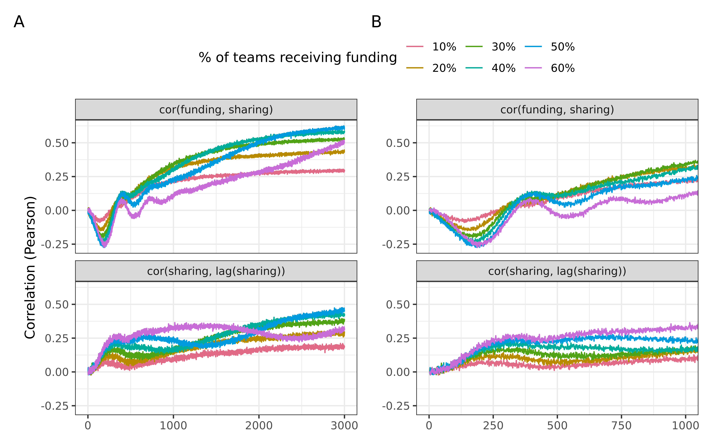
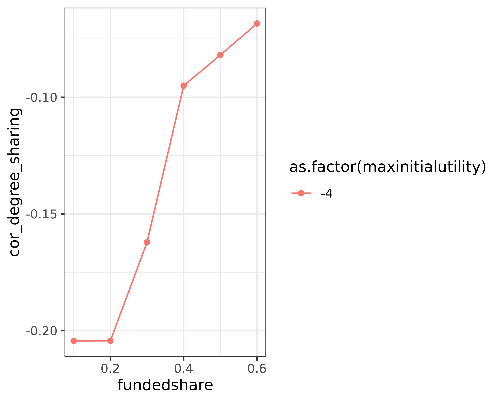
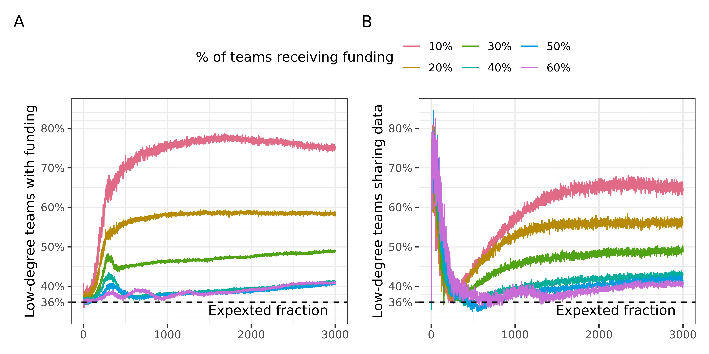

Analysis of funder selectivity: individual level data
Research questions:
- Are always the same teams receiving funding?
- Are those that are being funded also those that share data?
- Are those that share data / receive funding more or less central in the network?
Evolution of effort among funded an non-funded teams
Code
fragmented_intervention <- fragmented %>%
filter(sharingincentive == .4, maxinitialutility == -4)
fragmented_effort <- fragmented_intervention %>%
group_by(step, fundedshare, funded) %>%
summarise(mean_effort = mean(effort)) %>%
collect()`summarise()` has grouped output by "step" and "fundedshare". You can override
using the `.groups` argument.Warning: Missing values are always removed in SQL aggregation functions.
Use `na.rm = TRUE` to silence this warning
This warning is displayed once every 8 hours.Code
p1 <- fragmented_effort %>%
ggplot(aes(step, mean_effort, colour = funded)) +
geom_line() +
facet_wrap(vars(fundedshare), nrow = 2) +
colorspace::scale_colour_discrete_qualitative() +
theme(legend.position = "top")
p1
Code
p1 +
coord_cartesian(xlim = c(0, 1000))No network
Code
no_network_intervention <- no_network %>%
filter(sharingincentive == .4, maxinitialutility == -4)
no_network_effort <- no_network_intervention %>%
group_by(step, fundedshare, funded) %>%
summarise(mean_effort = mean(effort)) %>%
collect()`summarise()` has grouped output by "step" and "fundedshare". You can override
using the `.groups` argument.Code
p1 <- no_network_effort %>%
ggplot(aes(step, mean_effort, colour = funded)) +
geom_line() +
facet_wrap(vars(fundedshare), nrow = 2) +
colorspace::scale_colour_discrete_qualitative() +
theme(legend.position = "top")
p1
Code
p1 +
coord_cartesian(xlim = c(0, 1000))
It seems that at first, funded teams keep a low effort, and unfunded teams increase their effort. This also explains the slower uptake. It is thus not actually the selective pressure (teams adapting towards selective funder), but rather that the general tendency of increasing effort if unsuccessful or equal affects a larger portion of the sample when only few are funded.
But hold on: the slope for the funded teams is also steeper for the more selective versions. Maybe the selective pressure still does work the way we initially described it. Need to check below whether there is this switch in which teams receive funding, and whether this changes over the first 500 steps.
Effort distributions
We want to investigate the distribution of effort over time. Need to bin steps and effort.
Code
effort_plot <- function(df, palette = "viridis") {
df %>%
mutate(effort = (as.integer(effort_group) - 20) / 2) %>%
ggplot(aes(as.integer(step_group) * 100, effort, fill = n)) +
geom_tile() +
scale_fill_viridis_c(option = palette) +
facet_wrap(vars(fundedshare)) +
theme(legend.position = "top")
}Code
effort_breaks <- seq(-10, 10, .5)
step_breaks <- seq(0, 3000, 100)
binned_effort_no_network <- no_network_intervention %>%
mutate(effort_group = cut(effort, breaks = effort_breaks, labels = FALSE,
include.lowest = TRUE),
step_group = cut(step, breaks = step_breaks, labels = FALSE,
include.lowest = TRUE)) %>%
group_by(fundedshare, step_group) %>%
count(effort_group) %>%
collect()Code
effort_plot(binned_effort_no_network, "turbo")Code
binned_effort_low_clustering <- fragmented_intervention %>%
mutate(effort_group = cut(effort, breaks = effort_breaks, labels = FALSE,
include.lowest = TRUE),
step_group = cut(step, breaks = step_breaks, labels = FALSE,
include.lowest = TRUE)) %>%
group_by(fundedshare, step_group) %>%
count(effort_group) %>%
collect()Code
effort_plot(binned_effort_low_clustering, "turbo")
Are always the same teams receiving funding?
Need to ask a new question here: is there a turnover at the start, at around steps 200, in particular for the no network scenario? In the sense, that those who previously had funding lose it?
Code
plot_skeleton <- function(df, variant = "one") {
df %>%
pivot_longer(starts_with("mean")) %>%
mutate(fundedshare = scales::percent(fundedshare, accuracy = 1),
name = switch(variant,
one = case_match(
name,
"mean_cor_funding" ~ "cor(funding, lag(funding))",
"mean_cor_init_resources" ~ "cor(funding, initial resources)"
),
two = case_match(
name,
"mean_cor_funding_sharing" ~ "cor(funding, sharing)",
"mean_cor_sharing_lag" ~ "cor(sharing, lag(sharing))"
)
)) %>%
ggplot(aes(step, value, colour = fundedshare)) +
geom_line() +
facet_wrap(vars(name), nrow = 2) +
theme(legend.position = "top") +
colorspace::scale_colour_discrete_qualitative() +
labs(colour = "% of teams receiving funding", x = NULL,
y = "Correlation (Pearson)")
}Fragmented (low clustering) network
Code
correlations <- fragmented_intervention %>%
group_by(step, fundedshare, run_number) %>%
summarise(cor_funding = cor(as.numeric(funded), as.numeric(funded_lag)),
cor_init_resources = cor(as.numeric(funded), as.numeric(initial_resources))) %>%
group_by(step, fundedshare) %>%
summarise(mean_cor_funding = mean(cor_funding),
mean_cor_init_resources = mean(cor_init_resources)) %>%
collect()`summarise()` has grouped output by "step" and "fundedshare". You can override
using the `.groups` argument.
`summarise()` has grouped output by "step". You can override using the
`.groups` argument.
`summarise()` has grouped output by "step" and "fundedshare". You can override
using the `.groups` argument.Code
p <- correlations %>%
plot_skeleton()Code
p2 <- p +
coord_cartesian(xlim = c(0, 500))Code
p +
p2 + labs(y = NULL) +
plot_layout(widths = c(5, 4), guides = "collect") +
plot_annotation(tag_levels = "A") &
theme(legend.position = "top")Warning: Removed 6 rows containing missing values (`geom_line()`).
Removed 6 rows containing missing values (`geom_line()`).
This clearly shows: there is some substantial change of events here. Correlation with initial resources is stable at first, but plummets just before step 200. This is also when effort for funded teams goes up substantially. Therefore, we can conclude: teams that do not share data remain successful at first. But once the others start to share data, they take over, and correlation with initial resources goes either to 0 or even to negative values. The turnover is not complete, of course, otherwise the correlation would be -1.
No network
Code
correlations_no_network <- no_network_intervention %>%
group_by(step, fundedshare, run_number) %>%
summarise(cor_funding = cor(as.numeric(funded), as.numeric(funded_lag)),
cor_init_resources = cor(as.numeric(funded), as.numeric(initial_resources))) %>%
group_by(step, fundedshare) %>%
summarise(mean_cor_funding = mean(cor_funding),
mean_cor_init_resources = mean(cor_init_resources)) %>%
collect()`summarise()` has grouped output by "step" and "fundedshare". You can override
using the `.groups` argument.
`summarise()` has grouped output by "step". You can override using the
`.groups` argument.
`summarise()` has grouped output by "step" and "fundedshare". You can override
using the `.groups` argument.Code
p <- correlations_no_network %>%
plot_skeleton()Code
p2 <- p +
coord_cartesian(xlim = c(0, 1000))Code
p +
p2 + labs(y = NULL) +
plot_layout(widths = c(5, 4), guides = "collect") +
plot_annotation(tag_levels = "A") &
theme(legend.position = "top")Warning: Removed 6 rows containing missing values (`geom_line()`).
Removed 6 rows containing missing values (`geom_line()`).
Are those that are being funded also those that share data?
Low clustering
Code
funding_vs_sharing <- fragmented_intervention %>%
group_by(step, fundedshare, run_number) %>%
summarise(cor_funding_sharing = cor(as.numeric(funded), as.numeric(shared_data)),
cor_sharing_lag = cor(as.numeric(shared_data), as.numeric(shared_data_lag))) %>%
group_by(step, fundedshare) %>%
summarise(mean_cor_funding_sharing = mean(cor_funding_sharing),
mean_cor_sharing_lag = mean(cor_sharing_lag)) %>%
collect()`summarise()` has grouped output by "step" and "fundedshare". You can override
using the `.groups` argument.
`summarise()` has grouped output by "step". You can override using the
`.groups` argument.
`summarise()` has grouped output by "step" and "fundedshare". You can override
using the `.groups` argument.Code
p1 <- funding_vs_sharing %>%
plot_skeleton(variant = "two")Code
p2 <- p1 +
coord_cartesian(xlim = c(0, 1000))
p2Warning: Removed 6 rows containing missing values (`geom_line()`).
Code
p1 +
p2 + labs(y = NULL) +
plot_layout(widths = c(5, 5), guides = "collect") +
plot_annotation(tag_levels = "A") &
theme(legend.position = "top")Warning: Removed 6 rows containing missing values (`geom_line()`).
Removed 6 rows containing missing values (`geom_line()`).
WHY ARE THERE SO MANY MISSING VALUES AT THE START?
No network
Code
funding_vs_sharing_no_network <- no_network_intervention %>%
group_by(step, fundedshare, run_number) %>%
summarise(cor_funding_sharing = cor(as.numeric(funded), as.numeric(shared_data)),
cor_sharing_lag = cor(as.numeric(shared_data), as.numeric(shared_data_lag))) %>%
group_by(step, fundedshare) %>%
summarise(mean_cor_funding_sharing = mean(cor_funding_sharing),
mean_cor_sharing_lag = mean(cor_sharing_lag)) %>%
collect()`summarise()` has grouped output by "step" and "fundedshare". You can override
using the `.groups` argument.
`summarise()` has grouped output by "step". You can override using the
`.groups` argument.
`summarise()` has grouped output by "step" and "fundedshare". You can override
using the `.groups` argument.Code
p1 <- funding_vs_sharing_no_network %>%
plot_skeleton(variant = "two")Code
p2 <- p1 +
coord_cartesian(xlim = c(0, 1000))Code
p1 +
p2 + labs(y = NULL) +
plot_layout(widths = c(5, 5), guides = "collect") +
plot_annotation(tag_levels = "A") &
theme(legend.position = "top")Warning: Removed 6 rows containing missing values (`geom_line()`).
Removed 6 rows containing missing values (`geom_line()`).
This shows quite clearly: at first those who are sharing are not funded (negative correlation). Around step 200 this turns around, and correlations rise subsequently.
Correlation between sharing and lagged sharing are generally low. There is much turnover in which teams are sharing, although funding path dependency is quite high. This is thus a substantially different behaviour than in the case of the network.
The analysis of the effort distributions should give us another glimpse at what is going on here, and thus be instructive.
Are those that share data / receive funding more or less central in the network?
HIGHLY INTERESTING OBSERVATION: in the fragmented network, it is mostly those teams which are not well-connected that keep sharing data (in line with the general finding that no network leads to more sharing than having a network. Those that are closer to having no network (low degree) are thus more likely to share). Is it then also those that receive more funding? Need to compare with centrality measures.
This might be the reason, why the means that we show are much smoother for the fragmented network, compared to the clustered, and especially the random network: in the fragmented network, the types of nodes sharing data are quite similar across runs, because there is a strong difference in degree between the nodes. In the clustered, and more so in the random network, there are not so big differences in degree, and thus there is more variability in who shares.
Code
# get network data
fragmented_network <- igraph::read_graph(here("network_generation/data/fragmented_network.gml"), format = "gml")
# calculate centrality
fragmented_centrality_local <- fragmented_network %>%
as_tbl_graph() %>%
mutate(degree = centrality_degree(),
mean_degree = median(degree),
is_low_degree = degree < mean_degree) %>%
select(who = id, degree, is_low_degree) %>%
as_tibble()
fragmented_centrality_local %>%
copy_to(sc, ., name = "fragmented_centrality", overwrite = TRUE)# Source: spark<fragmented_centrality> [?? x 3]
who degree is_low_degree
<dbl> <dbl> <lgl>
1 0 3 FALSE
2 1 3 FALSE
3 2 2 TRUE
4 3 3 FALSE
5 4 2 TRUE
6 5 3 FALSE
7 6 1 TRUE
8 7 1 TRUE
9 8 3 FALSE
10 9 1 TRUE
# more rowsCode
fragmented_centrality <- tbl(sc, "fragmented_centrality")
fragmented_centrality# Source: spark<fragmented_centrality> [?? x 3]
who degree is_low_degree
<dbl> <dbl> <lgl>
1 0 3 FALSE
2 1 3 FALSE
3 2 2 TRUE
4 3 3 FALSE
5 4 2 TRUE
6 5 3 FALSE
7 6 1 TRUE
8 7 1 TRUE
9 8 3 FALSE
10 9 1 TRUE
# more rowsCode
degree_stats <- fragmented_intervention %>%
filter(step > 2000) %>%
left_join(fragmented_centrality, by = "who") %>%
group_by(maxinitialutility, fundedshare) %>%
summarise(cor_degree_sharing = cor(as.numeric(degree), as.numeric(shared_data)),
cor_degree_funding = cor(as.numeric(degree), as.numeric(funded))) %>%
collect()`summarise()` has grouped output by "maxinitialutility". You can override using
the `.groups` argument.Code
degree_stats %>%
ggplot(aes(fundedshare, cor_degree_sharing,
colour = as.factor(maxinitialutility))) +
geom_line() +
geom_point()
Correlations are negative, but not very strong. The negative correlation means that teams with a lower degree share more. This is apparently the case. The correlation is weak, since not all low-degree teams share data, simply because not all teams are being funded. Once more teams are being funded, of course also higher-degree teams are being funded, because there are only so few low-degree teams.
How can we show this better? We can compute what the fraction of funded teams which are low-degree is.
Code
# compute the share of teams being funded that are low-degree
low_degree_hypothesis <- fragmented_intervention %>%
left_join(fragmented_centrality, by = "who") %>%
group_by(maxinitialutility, fundedshare, run_number, step, funded) %>%
count(is_low_degree) %>%
mutate(fraction = n / sum(n)) %>%
filter(funded, is_low_degree) %>%
group_by(maxinitialutility, fundedshare, step) %>%
summarise(mean_frac_low_degree_funded = mean(fraction)) %>%
collect()`summarise()` has grouped output by "maxinitialutility" and "fundedshare". You
can override using the `.groups` argument.Code
skeleton_two <- function(df, var) {
df %>%
mutate(fundedshare = scales::percent(fundedshare, accuracy = 1)) %>%
ggplot(aes(step, {{ var }}, colour = fundedshare)) +
geom_line() +
geom_hline(yintercept = true_fraction, linetype = 2) +
colorspace::scale_colour_discrete_qualitative() +
theme(legend.position = "top") +
labs(colour = "% of teams receiving funding", x = NULL)
}Code
# what is the actual fraction of low degree teams?
true_fraction <- fragmented_centrality_local %>%
count(is_low_degree) %>%
mutate(n = n / 100) %>%
filter(is_low_degree) %>%
pull(n)
p1 <- skeleton_two(low_degree_hypothesis, mean_frac_low_degree_funded) +
scale_y_continuous(breaks = c(true_fraction, seq(.4, to = .8, by = .1)),
labels = scales::label_percent(),
limits = c(.33, .85)) +
annotate("text", x = 2200, y = .34, label = "Expexted fraction") +
labs(y = "Fraction of funded low-degree teams")
p1
We see that for high selectivity (funded share is low), low-degree teams are over-represented among the funded teams. The analytic approach mirrors that of a Chisquare test.
The same with sharing
Code
# compute the share of teams sharing data that are low-degree
low_degree_hypothesis_sharing <- fragmented_intervention %>%
left_join(fragmented_centrality, by = "who") %>%
group_by(maxinitialutility, fundedshare, run_number, step, shared_data) %>%
count(is_low_degree) %>%
mutate(fraction = n / sum(n)) %>%
filter(shared_data, is_low_degree) %>%
group_by(maxinitialutility, fundedshare, step) %>%
summarise(mean_frac_low_degree_sharing = mean(fraction)) %>%
collect()`summarise()` has grouped output by "maxinitialutility" and "fundedshare". You
can override using the `.groups` argument.Code
p2 <- skeleton_two(low_degree_hypothesis_sharing, mean_frac_low_degree_sharing) +
scale_y_continuous(breaks = c(true_fraction, seq(.4, to = 1, by = .1)),
labels = scales::label_percent(),
limits = c(.33, .85)) +
annotate("text", x = 2200, y = .34, label = "Expexted fraction") +
labs(y = "Fraction of data sharing low-degree teams")
p2
Code
p1 + labs(y = "Low-degree teams with funding") +
p2 + labs(y = "Low-degree teams sharing data") +
plot_layout(guides = "collect") +
plot_annotation(tag_levels = "A") & theme(legend.position = "top")
Code
# THE CODE BELOW DOES NOT WORK CURRENTLY
# we cannot do a grouped chisquare in spark directly, therefore using spark_apply
test_fun <- function(df) {
res <- chisq.test(df$funded, df$is_low_degree)
broom::tidy(res)
}
chisquare_res <- funding_status %>%
# head(1000) %>%
left_join(fragmented_centrality, by = "who") %>%
spark_apply(test_fun,
columns = c("maxinitialutility", "fundedshare", "run_number",
"step")) %>%
group_by(maxinitialutility, fundedshare) %>%
summarise(mean_statistic = mean(statistic),
mean_p = mean(p.value)) %>%
collect()
# We could also run it like this, but it does not do grouped tests, only executes on everything
# group_by(maxinitialutility, fundedshare, run_number, step) %>%
# mutate(is_low_degree = as.character(is_low_degree),
# funded = as.character(funded)) %>%
# ml_chisquare_test(features = "is_low_degree", label = "funded")Code
spark_disconnect(sc)